Elastic Cloud Enterprise Deployment
介紹大家第一次安裝使用 ECE (Elastic Cloud Enterprise) 及開箱管理主控台介面 (Cloud UI) 和部屬樣板 (Deployment Templates) 的體驗心得。
Elastic Cloud Enterprise: 需要憑證，但第一次安裝會給 30 天的試用
- 使用統一的介面規範、管理、監控不同架構下的 Elasticsearch 和 Kibana
- 可以選擇部屬在實體機、虛擬機、私有雲、公有雲皆可
- 能夠輕鬆設定結點的擴展 (scalability)、安全性 (security)、升級 (upgrades)、備份與快照 (backups)
操作 ECE 有三種方式
- GUI
- 直接下指令，指令可以安裝也可以升級和維護配置
- 透過 API
硬體規格建議，Production 機台至少 8G 記憶體，升級規格後就不能降級，所以要注意
- 預設每個 clusters RAM:storage 是 1:32，所以 1G 最少要配 32G 的硬碟
- 搜尋服務: SSD + RAM:storage 1:16 ~ 1:8
- 儲存服務: HD + RAM:storage 1:48 ~ 1:96
安裝 ECE
安裝前會有很多 Linux 指令會需要輸入並編輯很多設定檔，大多是在設置環境和權限就不逐一贅述。
大概有 30 個步驟左右
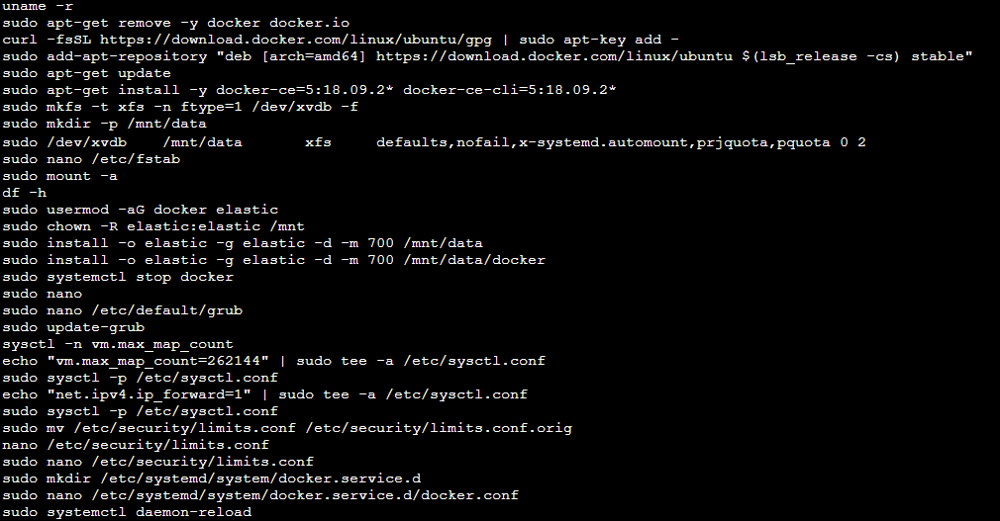
安裝完成後記得重開機，然後確認一下權限
該掛的都有掛上去，也確認都有 Root 了
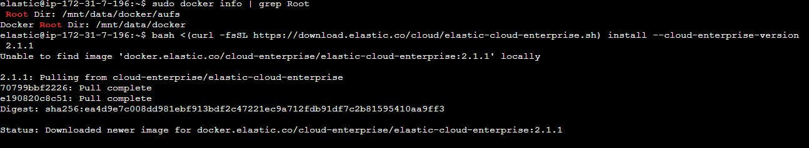
就可以下一鍵安裝指令，安裝完記得備份一下輸出的訊息，因為包含帳號密碼，還有相關的 token
成功訊息中包含很多敏感資料
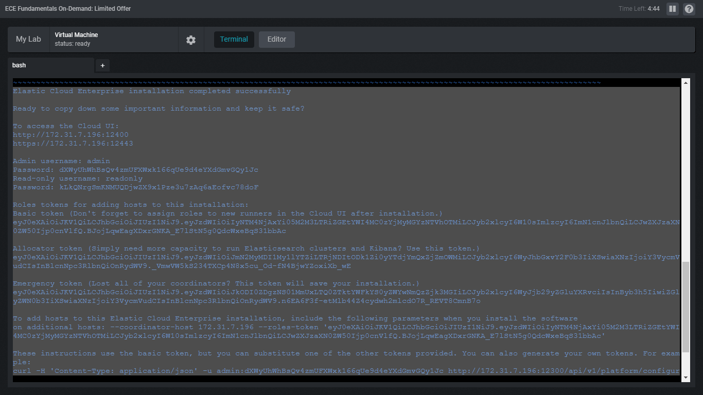
ECE Deployments
ECE 底層幾乎跟 Elasticsearch 是相同的，原則上可以用相同方法邏輯去管理所有的 Elastic Stack 服務。
安裝部屬完成後就可以用瀏覽器進到網頁版的管理主控台介面 (Cloud UI)，管理主控台 (Cloud UI) 提供了網頁版的管理介面，能夠管理、安裝及監控 ECE 的元件，Cloud UI 主要會分成三大塊
- Deployments: 顯示所有已部屬的元件服務列表，顯示相關規格與健康度
- Platform: ECE 本身相關管理
- Activity Feed: 所有部屬的元件服務最近活動的時間
操作說明與步驟大致如下，首先可以先練習建立一個部屬，並進入 Cluster 查看 Elasticsearch 相關的詳細資料
建立一個新的部屬
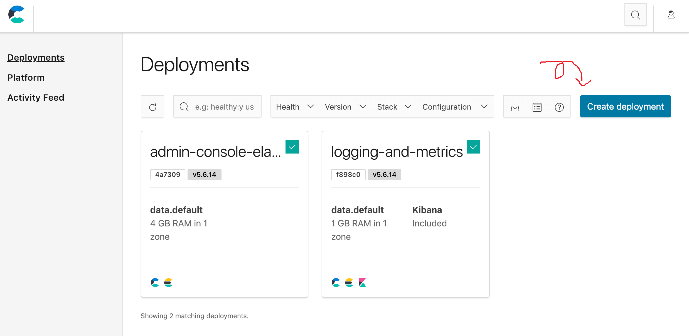
建立的時候有預設的 Templete，也可以自訂配置記憶體大小、ES 版本
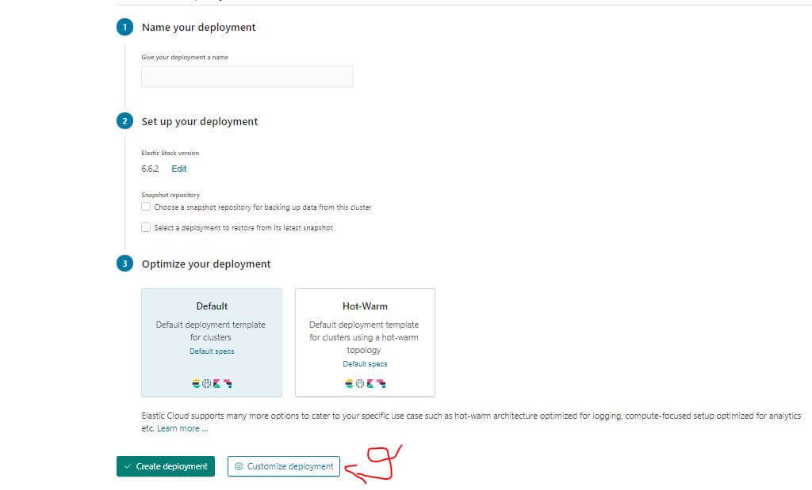
建立完成後會有個密碼記得存好，Activity 會顯示目前節點上的活動
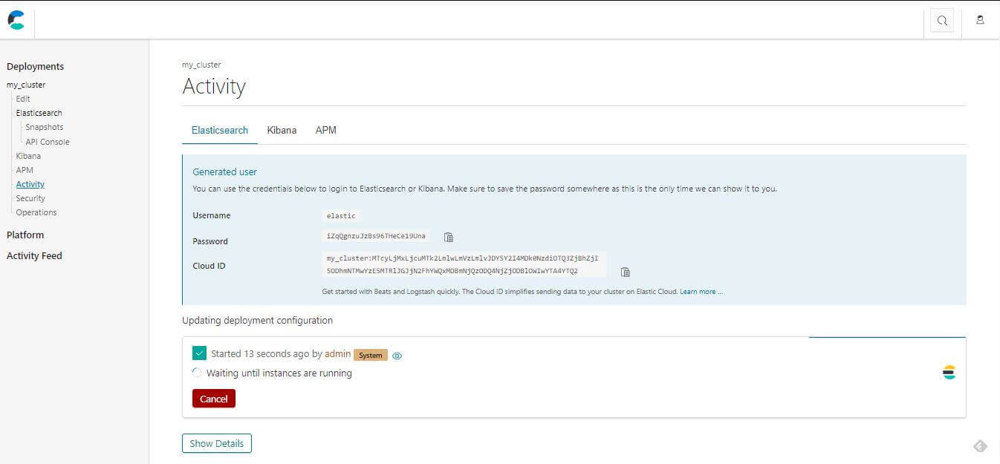
完成後可以開啟 ES 的監控，這樣就可以在 kibana 上監控服務狀況
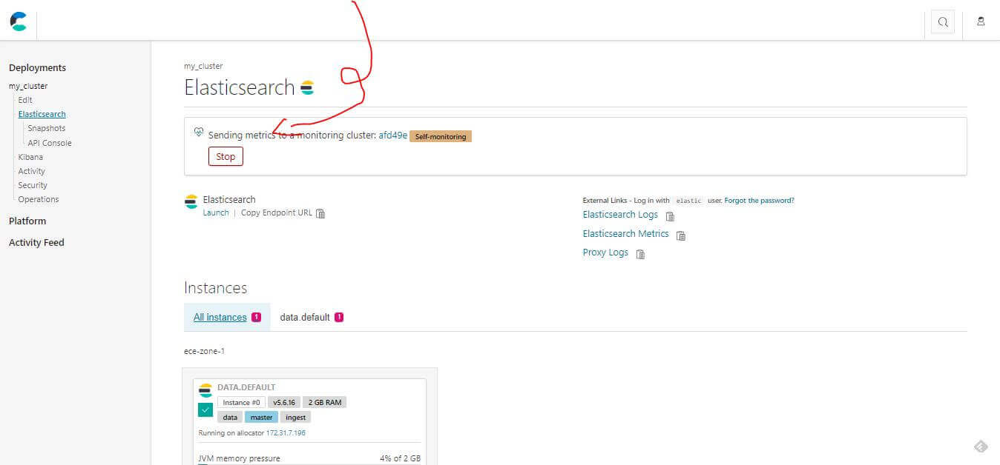
建立的時候選錯了也可以透過編輯修改相關配置
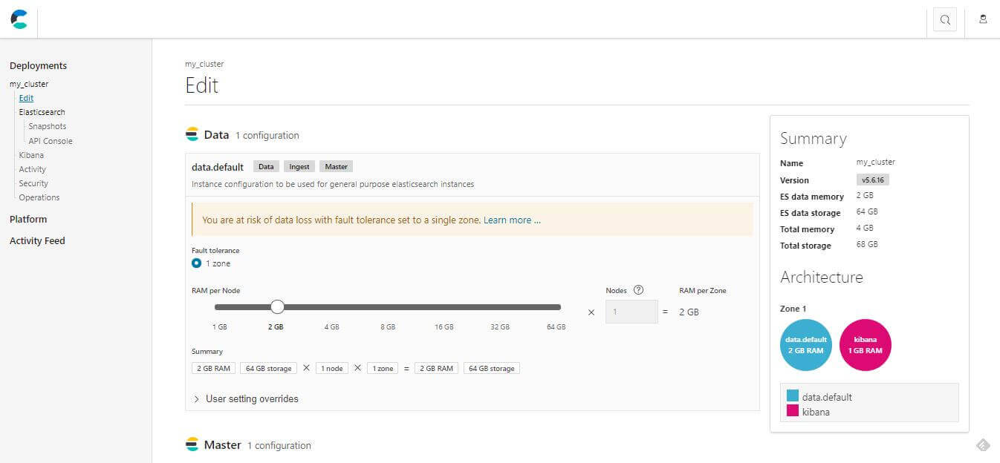
在設定好 Repository 後，才能夠啟用快照功能，目前看起來只支援 S3
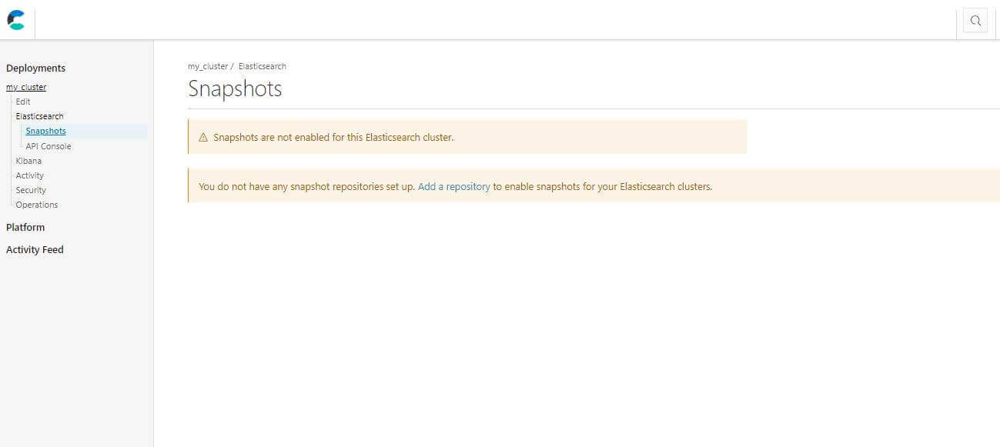
找不到怎麼設定 ES 也提供 API 可以下指令處理
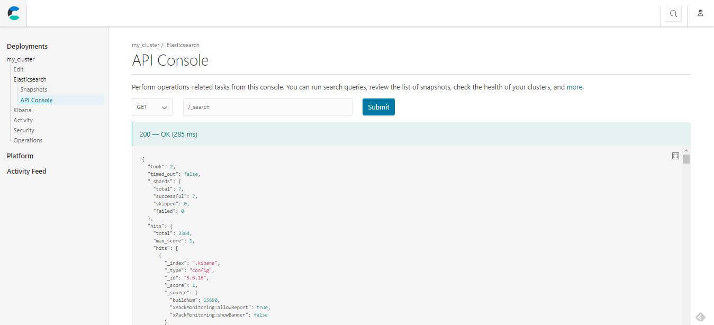
監控與其他相關設定:
- Kibana: 基本相關訊息，可以在這裡開啟介面跟重啟
- Activity: 顯示最近活動
- Security: 安全性相關設定
- Operations: 其他設定與操作
可以到 Kibana 的介面查看，剛剛建立配置的時候會有個密碼就是在 kibana 使用，忘記的話也沒關係
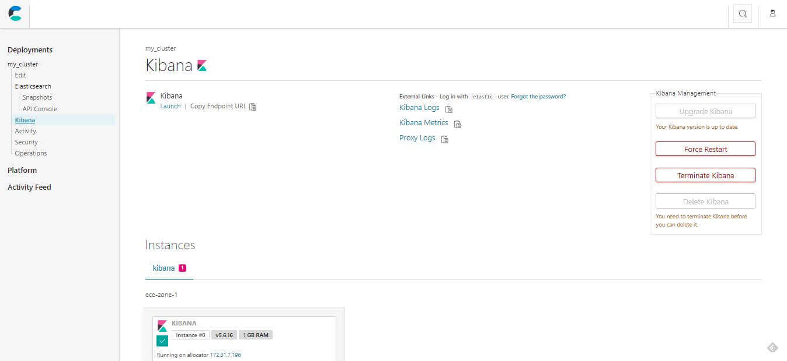
開啟 ES 監控後的介面
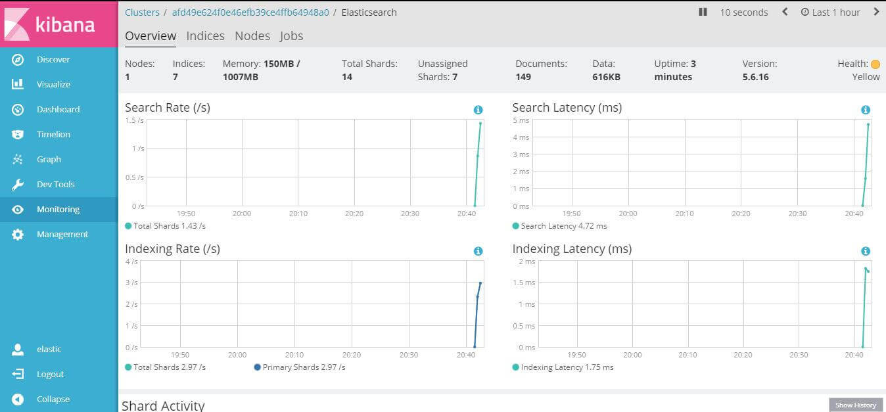
Security 安全相關設定，忘記密碼也可以在這裡重設
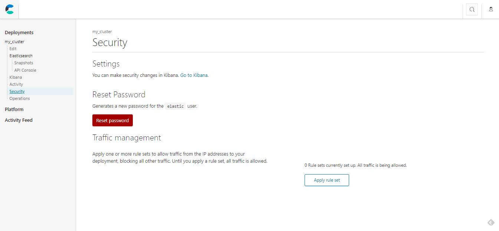
Operations 提供其他相關的操作
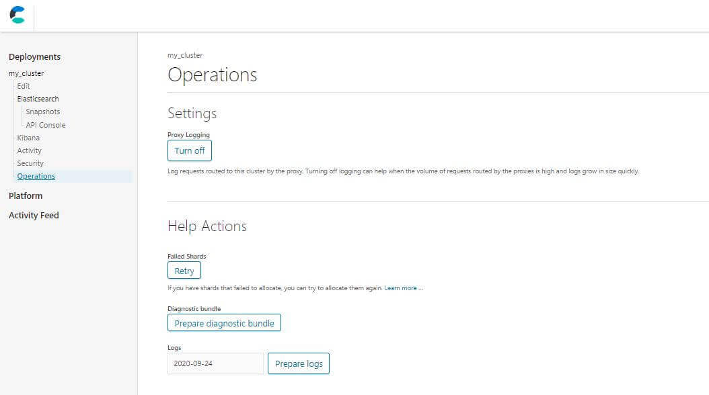
Deployment Templates
接下來會介紹如何建立 Elastic Cloud Enterprise 的部屬樣版，在未來系統效能不夠時，能夠方便且快速的做擴充。當建立一個部屬的時候，會需要設定部屬中包含哪些 Elastic Stack 中的服務和相關的硬體規格，Elastic Cloud Enterprise 提供了預先為了搜尋還有一般用途使用的的 Deployment 樣板方便大家直接使用，
建立一個樣板的步驟如下
- 在 Allocators 加上 Tags: 這樣未來機台變多時，才會知道這裡給了哪種規格的硬體配置
- Instance Configurations: 運用 Tag 新增配置，譬如篩選出配置 SSD + I7 的所有資源
- 用設定好的 Instance 配置去建立一個 Deployment 樣版
Tagging Allocators
在安裝完 ECE 之後，可以先幫現有的 Allocators 進行標記，標記的目的是為了在建立 instance configurations 和 deployment templates 可以進行辨識與篩選指定，未來在新加入的時候也要記得加上相關 Tags，在命名跟描述上要盡量避免用特殊案例也盡量避免用 Elastic Stack 元件去命名。
Tag 會由 key 和 value 組成，底下列出簡單的分類和命名範例:
- CPU:
highCPU: true - Memory:
highMemory: true - Storage:
highstorage: true - I/O:
SSD: true
加入的方式首先到 Platform > Allocators 的管理介面，點選想要加入的機器進行配置，預設會是沒有任何 Tag 的，加入相關 Tag 後就可以在列表上看到。
新增 Tag 很簡單就是輸入 key, value 相關資訊按加入
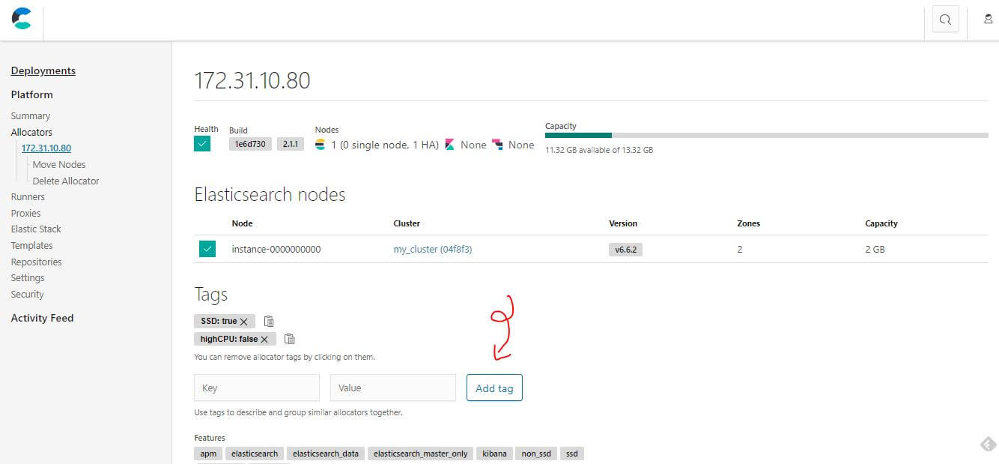
加入相關 Tag 後就可以在列表上看到
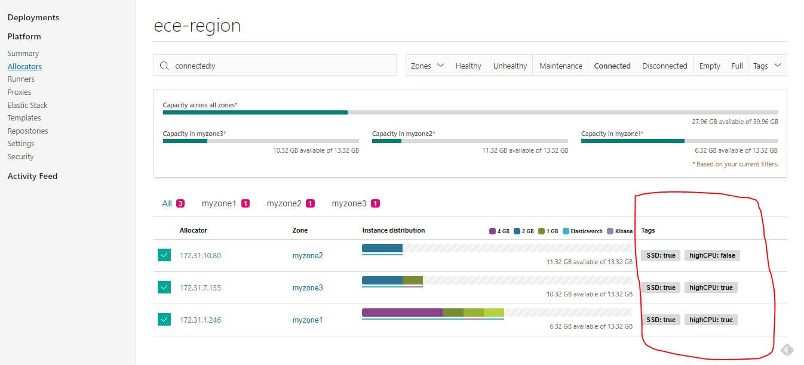
Instance Configurations 新增配置
首先到 Platform > Templete > Instance Configurations 的 Tab 可以看到目前已經有的配置列表，在建立的時候就會用到之前設定過的 Tag 來當作條件去篩選並指定需要的硬體狀況。
配置列表
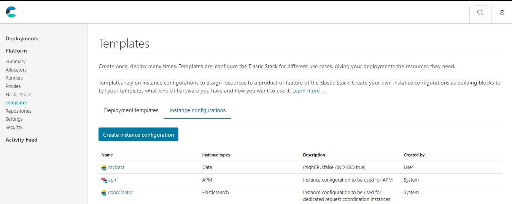
用 Tag 來當作條件去篩選並指定需要的硬體狀況
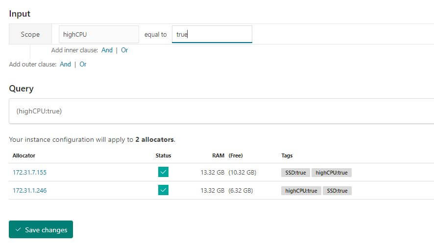
Deployment 樣版建立
接著就可以到 Platform > Templete > Deployment Templete 的 Tab 開始建立，建立的時候選擇需要啟動的 Elastic Stack 元件，然後就可以選擇需要的 Instance Configurations 前一個步驟設定好的配置就可以在這個時候使用。
樣板列表
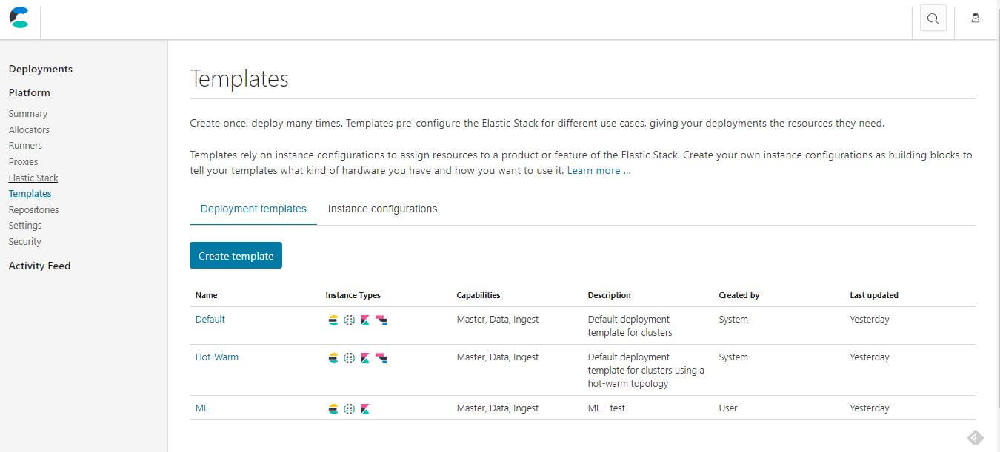
選擇需要的 Instance Configurations
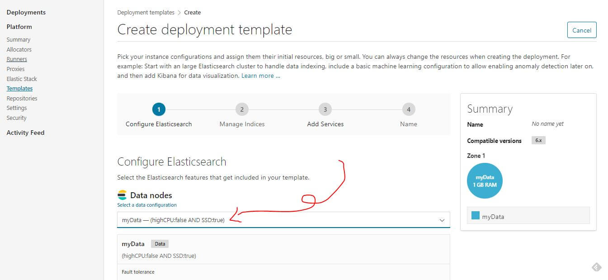
選擇需要的 Elastic Stack 元件並配置硬體規格
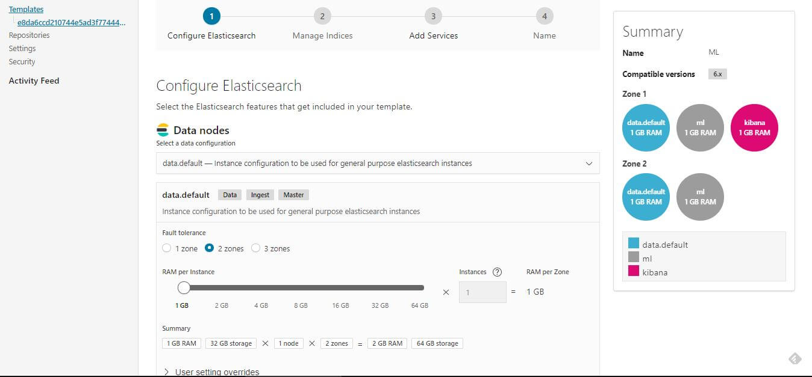
Hot Warm Template
在預設的樣板列表中可以看到一個比較特別的 hot-warm template，用途就是用來儲存和分析 time-series 的資料，hot-warm 這樣的結構提供分析和儲存的部屬情境。
讓我們幫大家複習一下 Log 在 Elastic Stack 中的生命週期，這個樣板就是為了這樣的生命週期出現的。
- 資料的產生
- Filebeat 傳送
- 處理與儲存
- Hot Data: 常讀寫
- Warm Data: read-only 少用
- 搜尋與分析
- 封存資料成 Warm Data
- Purge 清除不在使用的資料
樣板列表中的第二個
hot-warm 的結構至少會需要兩種 Node，至少一個 Elasticsearch Hot Node 用來檢索最近的資料，還有一個 Warm node 用來存取 read-only 的索引或是比較少檢索的資料。
- Hot Data Node: 處理常被檢索的索引及負責處理新進資料，所以硬體配置會需要處理較大量的 I/O 通常會建議配置 SSD
- Warm Data Node: 處理大量只會 read-only 的且較少被檢索的索引，因為會用到大量空間，可以用一般硬碟較省成本
心得與結論
ECE 的好處是看起來介面比較簡單過場動畫也做得比較好，不管是控制台、監控儀錶板都已經設計好且開箱即用，算是一個蠻方便且完整的服務，雖然教學文件看起來很長，但 UI 打開來點一點大概就知道功能怎麼使用，唯一複雜的大概就是 Linux 安裝前的相關配置，操作的時候建議還是要知道操作了什麼開了什麼權限。
使用開箱即用的服務其實是好的，舉例來說以前也曾經透過 PostGIS 去檢索 PostgreSQL 裡面的地理資訊，開發速度跟寫法效能就需要依賴工程師的實力，畢竟也是需要了解 PostGIS 然後維護一個後端服務。
後來透過架設 Solr 發現全文檢索也已經支援經緯度甚至範圍搜尋的功能，所以如果沒有需要用到像是 KNN 這種高級運算，只要架好全文檢索服務就可以直接使用 API 參數進行相關操作，效能會有一定程度的保證也不需要開發及維護後端的程式碼。
喜歡這篇文章，請幫忙拍拍手喔 🤣


站內搜尋
其他相關文章


Elastic APM 基礎教學
2020-09-12
Elastic App Search Quick Start
2020-09-06
最新的文章

Cumulative Layout Shift (CLS)
2024-03-03Google AdSense 新加坡稅務資訊
2024-03-03當時相信的專案規劃，能夠一如期待?
2024-03-03